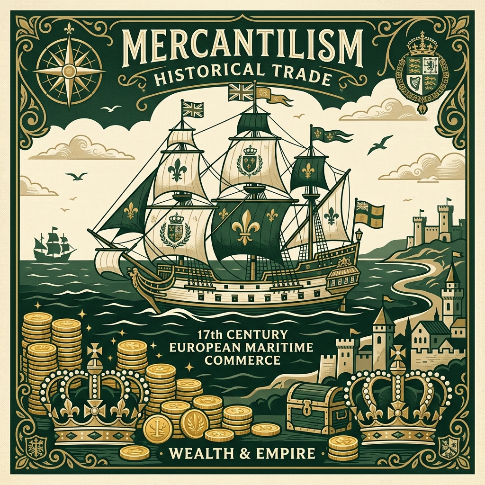
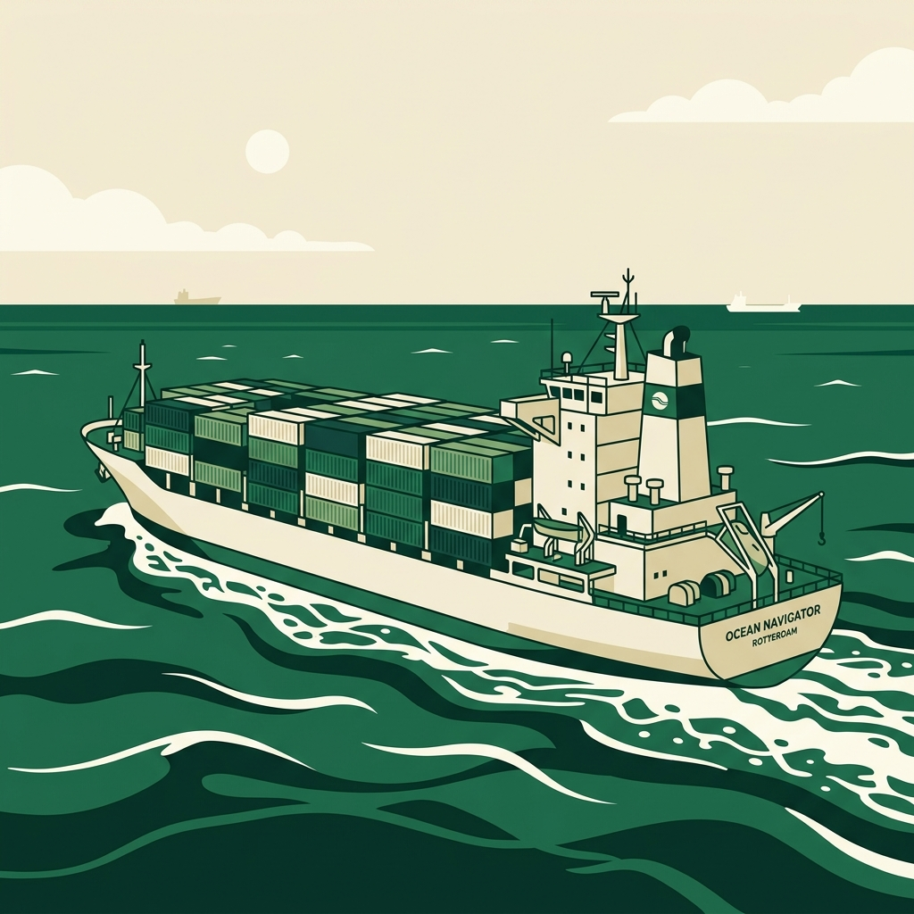
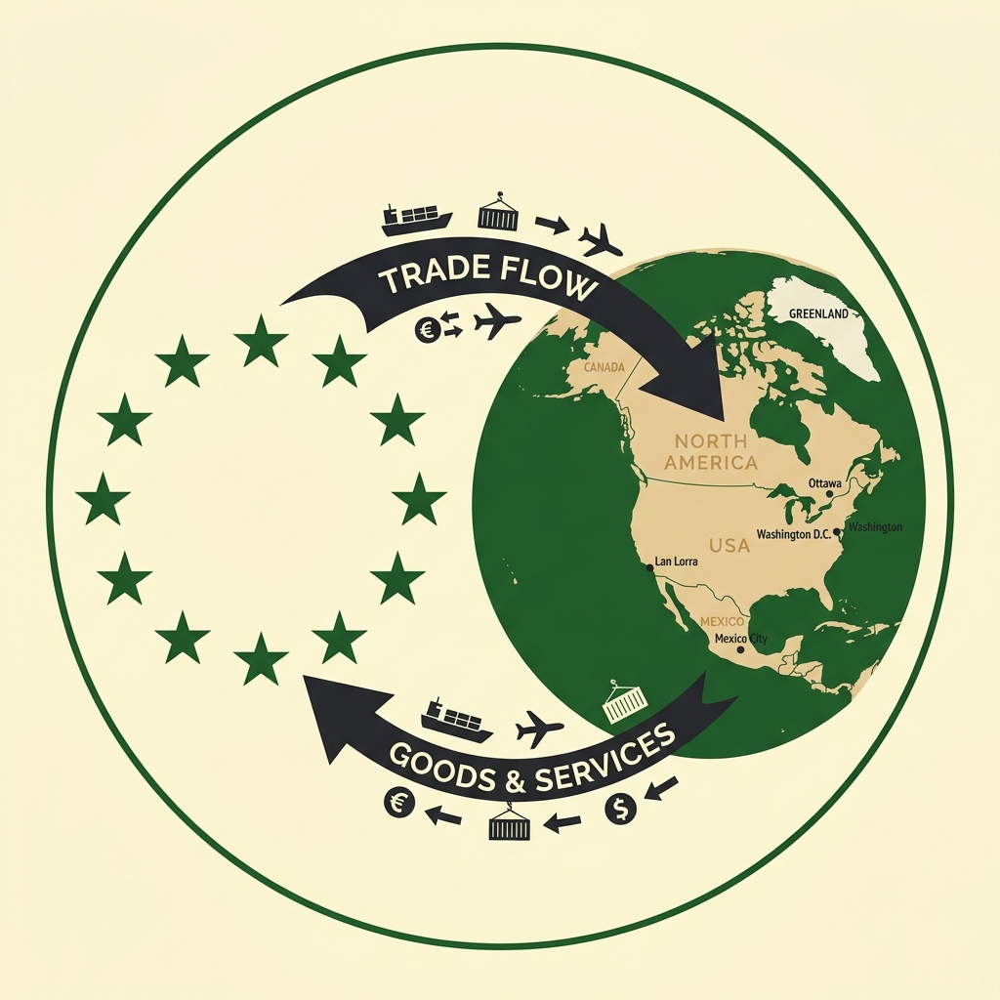
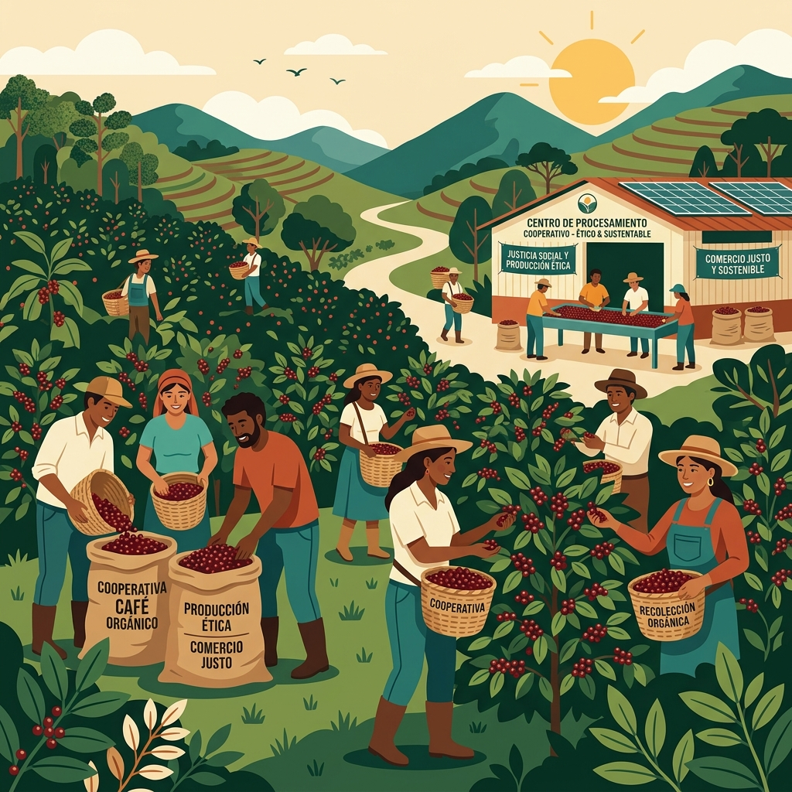

The Three Lenses of Trade
| Protectionist Model | Free Trade Model | Fair Trade Model |
|---|---|---|
|
THE
SHIELD
Focuses on protecting local jobs, national security, and domestic industries. Uses
import taxes (tariffs) and quotas to block cheaper foreign goods.
Key Example: The 2025-26 Canada-US Tariff War |
THE
ENGINE
Focuses on cost minimization, specialization, and consumer savings. Tears down trade
barriers so goods cross borders freely.
Key Example: The EU and NAFTA/CUSMA Blocs |
THE
CONTRACT
Focuses on ethical wages, safe work conditions, and community development. Guarantees
base prices and pays social premiums to small farmers.
Key Example: Fair Trade Cocoa/Coffee Cooperatives |
What is International Trade?
- It's Not Country-to-Country: We aren't in the 1700s anymore. Trade isn't just Canada swapping wood for French wine. Today, it is controlled by massive Transnational Corporations (TNCs) (like Nike, Apple, or Nestlé) managing complex, global puzzles.
- The iPhone Odyssey: A typical smartphone travels through 15 countries before hitting your pocket! Raw cobalt mined in the Congo, microchips fabricated in Taiwan, designed in California, and assembled in China.
- The 3 Friction Questions:
1. Who wins the cheap price game? (We get a $5 shirt, but does a worker in Bangladesh pay the price in a sweatshop?)
2. Who loses their job? (When manufacturing moves overseas to save money, what happens to factory workers in Canadian towns like Trenton or Pictou?)
3. Who pays for the pollution? (Shipping goods across oceans on cargo ships creates massive carbon footprints. Who pays for that damage?)
Mercantilism: Economic Warfare
For hundreds of years, European empires (like Britain, France, and Spain) believed the world's wealth was a fixed pie. Having the most gold and silver meant you won.
- The Colony Trap: Empires forced colonies (like early Canada) to ship cheap raw resources (furs, timber) only to the home country, and banned them from trading with anyone else.
- Sell Much, Buy Little: The home country turned those resources into expensive finished goods, forced the colonies to buy them back, and used high taxes (tariffs) to block foreign rivals. Why it backfired: These restrictive mercantilist policies, like stamp taxes and taxes on tea, eventually drove the American colonies to revolt against Britain in the American Revolution.
- Who had the power? The King and the state treasury. Shoppers and workers were just pieces on a chessboard.

Protectionism: Shields Up!
The Shields (Pros)
- Save Local Jobs: Prevents factories and mills from closing down when cheap imports flood the market.
- Strategic Autonomy: Ensures Canada can produce its own steel, food, and medicine during an emergency.
- Infant Industries: Gives startup domestic companies a chance to grow without being crushed by global giants.
The Cost (Cons)
- Everyday Price Hikes: Import taxes make everyday goods (shoes, food, steel cans) more expensive.
- Laziness & Monopolies: Without foreign competition, domestic companies have less reason to innovate.
- Trade Wars (Retaliation): If you tax their goods, they will tax yours back, hurting local exporters.
REAL-WORLD DRAMA: The Canada-US Trade War (2025-26)
The U.S. placed a 25% tax (tariff) on Canadian steel and 10% on aluminum under the threat of wider tariffs. Canada struck back immediately, hitting US steel and retaliating with taxes on random US products to hurt key political zones, targeting US maple syrup, toilet paper, whiskey, and orange juice. Prices spiked for consumers in both nations, demonstrating how quickly trade wars escalate and impact everyday shoppers.
Free Trade: Tearing Down the Walls
In the late 1700s, economists like Adam Smith argued that empires were bankrupting themselves. If countries stopped taxing imports, goods would become cheap, and everyone could specialize in what they do best.
- Comparative Advantage: If Canada is great at wheat, and Colombia is great at coffee, they shouldn't try to make both. Trade freely, and everyone gets cheaper bread and coffee.
- Friedman's Flat World: In his book The World is Flat, Thomas Friedman argues that technology and cheap shipping have "flattened" the globe. By minimizing geographical distance, companies can source and sell goods across continents as if borders didn't exist.
- Eliminating Barriers: Countries sign agreements to remove all tariffs, quotas, and trade rules, letting goods cross borders without delay.
- Who has the power? Transnational Corporations (TNCs) who can source materials anywhere, and shoppers demanding the lowest retail prices.

Free Trade Blocs: The EU & NAFTA
- The European Union (The Ultimate Team-Up): 27 European nations got rid of economic borders entirely. Goods, services, money, and people move freely. You can live in Spain, work in Germany, buy Italian cheese, and pay with the same currency (the Euro).
- NAFTA / CUSMA (The North American Trade Highway): Signed in 1994,
it took away taxes on goods traded between Canada, the U.S., and Mexico.
The Win: Cheap avocados, fresh winter produce, and integrated car parts manufacturing.
The Loss: Thousands of manufacturing jobs left Ontario and Quebec for Mexico, where labor was much cheaper.

Free Trade: Winners and Losers
The Wins (Pros)
- Massive Savings: Prices plummet. You get cheap clothes, phones, and food at your local supermarket.
- Global Variety: Eating fresh strawberries in January and buying the latest tech instantly.
- International Cooperation (The McDonald's Theory): Countries that trade together are highly unlikely to go to war. This is often called the "Golden Arches Theory": no two countries with a McDonald's franchise have ever fought a war against each other.
The Traps (Cons)
- Labor Exploitation: TNCs move factories to countries where child labor or forced labor is used to keep costs low.
- Pollution Havens: Moving factories to countries with weak environmental laws, poisoning local rivers and air.
- Job Outflow: Local factories shut down because they can't compete with sweatshop wages.
Fair Trade: Rewriting the Global Contract
Why is cocoa so cheap? A standard cocoa farmer in West Africa makes less than $1.20 a day, while massive TNCs make billions. Fair Trade attempts to change this power imbalance.
- Guaranteed Base Price: Protects small farmers from market crashes. If coffee or cocoa prices drop on the stock market, Fair Trade cooperatives still get a guaranteed minimum price.
- Social Premiums: Buyers pay an extra fee that goes directly into a community fund. Farmers vote democratically on how to spend it: building schools, health clinics, or clean water wells.
- Strict Rules: Enforces bans on child labor, forced labor, and dangerous pesticides.

Fair Trade: Ethical Hope vs. Hard Realities
The Wins (Pros)
- No Slavery or Child Labor: Rigorous third-party audits ensure humane and safe farm conditions.
- Direct Community Funding: Extra premiums build schools and wells, bypassing corrupt officials.
- Income Security: Shields farmers from volatile commodity price swings.
The Traps (Cons)
- High Entry Costs: The fees and paperwork to get "Fair Trade Certified" can exclude the poorest small farmers.
- The Price Premium: Shoppers must pay more, which limits sales to middle-class/rich neighborhoods.
- Niche Market: Hard to scale to match the massive reach of standard global supply chains.
The Three Lenses of Trade Comparison
| Category | Protectionism | Free Trade | Fair Trade |
|---|---|---|---|
| Primary Goal | Protect domestic industries and jobs. | Minimize costs and maximize global efficiency. | Ensure ethical wages and safe worker conditions. |
| Tariff Approach | Implement protective import tariffs/quotas. | Abolish or lower tariffs. | Focus on ethical standards, not tariff rules. |
| Key Actor | The Sovereign Nation-State. | Transnational Corporations (TNCs). | Worker Cooperatives & Certifiers. |
| Primary Beneficiaries | Domestic workers and local manufacturers. | TNCs, shareholders, and retail shoppers. | Smallholder growers, factory stitchers, and families. |
| Critical Failure | Raises consumer prices and risks trade retaliation. | Outsources labor exploitation and pollution. | High entry costs; difficult to scale globally. |
Your Design Lab Challenge
In your Design Lab, you are representing a Fair Trade Cooperative facing competition from low-priced Free Trade TNC competitors.
- The Consumer Brain: Shoppers naturally buy the cheapest option (Free Trade TNC).
- Your Tool: Choice Architecture: Designing the choice environment to influence decisions.
1. Default Bias: We tend to accept whatever option is pre-selected for us, since changing it requires deliberate effort.
Design: Pre-select the "Fair Trade Certified" option in an online grocery app. The shopper must actively opt out to choose the cheaper standard option. Making the ethical choice the path of least resistance dramatically increases uptake.2. Anchoring: The first number we see "anchors" how we judge every price that follows.
Design: Place an $18 super-premium Fair Trade gift box next to a $10 Fair Trade bag on the shelf. Suddenly the $10 option feels like a reasonable deal — even compared to a $5 standard bag.3. Social Proof: When uncertain, we look to what others are doing and assume they know something we don't.
Design: A shelf banner reading "85% of shoppers in this store choose Fair Trade to support farming families."4. Loss Aversion: Psychologically, the pain of losing something is about twice as powerful as the pleasure of gaining the same thing. We can use this by reframing the choice as preventing a loss.
Design: A shelf label that reads: "Choosing the standard option results in a –$2.00 loss in school funding for farming communities." People feel a visceral sting when they see their choice as actively taking something away from someone else.5. Identifiable Victim Effect: People are statistically less likely to donate to help "1,000 farmers" than to help one specific, named person. Abstract numbers don't move us; real individuals do.
Design: Replace the generic Fair Trade logo with a small photo and QR code on the shelf tag: "Your purchase directly supports Maria's farm in Chiapas." It is far harder to "cheap out" on Maria than on a faceless cooperative.6. Hyperbolic Discounting: We are biased toward immediate rewards over future benefits — but we're much more willing to commit to being ethical in the future than we are right now.
Design: A "Subscription for Good" model — offer a discount on the first Fair Trade bag today in exchange for committing to a monthly Fair Trade subscription. Users are more willing to be their "best ethical selves" when they are planning future habits rather than making a high-cost one-off purchase right now. - The Goal: Design choice environments that make consumers willingly pay the Fair Trade price premium, shifting power from TNCs back to the farmers.